Kibana Guide: Anomaly Detection and AIOps
|
This content was generated with the assistance of AI and should be verified against the official documentation before being relied on in production. |
Checked on 2026-11-11 against Kibana 9.5.x.
What you build
You use the Machine Learning tools of Kibana on the Bookshelf logs. A single metric job, guide-bookshelf-log-rate, learns the normal number of log lines per minute and flags buckets that differ from it.
You read its results, run a forecast, and then use log rate analysis to explain a spike of the failing mode: the analysis lists the field values behind the extra log lines, here the ERROR level and the
status 500. A change point detection run finds the moment when the average status code moved. The picture shows the end of the log rate analysis, the table of field values that explain the deviation.
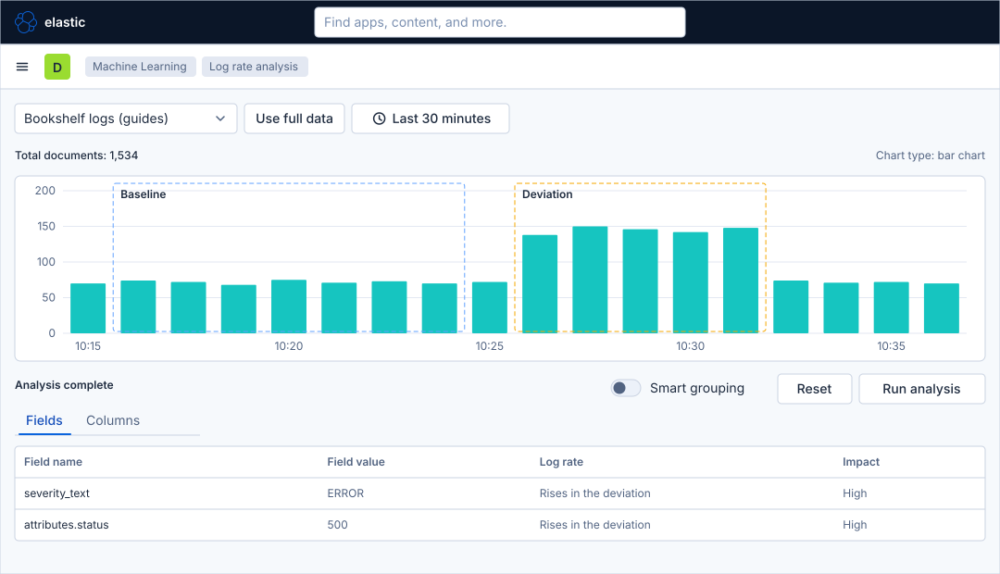
Before you start
-
Start the Kibana profile of the hands-on lab and wait about a minute:
cd lab docker compose --profile kibana up -d -
Open http://localhost:5601 and sign in as
elasticwith the passwordlab-elastic-password. When Kibana opens its full-screen welcome page, click Explore on my own. -
Do the previous guide, Manage alerts, maintenance windows and cases, and the guide that creates the data view, Upload a file and create a data view. This guide needs the data view Bookshelf logs (guides).
-
Licence: anomaly detection and forecasts need a Platinum licence, which the trial licence of the lab includes. Check it with
curl -s -u elastic:lab-elastic-password http://localhost:9200/_license. Log rate analysis, change point detection and the Data Visualizer are listed on the Machine Learning overview of the trial licence. -
Memory: the lab runs Elasticsearch with a small heap. If the job does not open and Kibana reports that no machine learning node has enough capacity, lower the model memory limit of the job, as the reference page on machine learning explains.
-
The load generator gives the data: the default mode fills the log data stream,
failingadds ERROR lines andstoppauses the traffic. -
Not run end to end: the Data Visualizer page, the single metric wizard, the Single Metric Viewer, the forecast, the Anomaly Explorer and change point detection were not completed in the lab. Their figures are drawn generically from the Elastic documentation, and the steps name the control without promising its exact place. The Machine Learning overview and the log rate analysis page were opened in the lab. In that run the automatically selected deviation of log rate analysis returned no results, so this guide has you select the deviation yourself.
-
A model needs history. A job started on a lab that has run for minutes may flag nothing yet; the check section says what to do then.
-
The figures are drawings of the Kibana 9.5 user interface, not screenshots, so small details can differ from your screen. A highlighted box with a number marks the control of the step with the same number.
Steps
One screen is the starting point of every tool: the Machine Learning Overview, with the sections Analyze your data, Surface insights and Visualize your data. Come back to it with the menu button and Machine Learning whenever a step says to open a tool.
Look at the data in the Data Visualizer
-
Click the menu button (Toggle primary navigation) at the left of the second bar and, under Analytics, click Machine Learning.
-
Under Visualize your data, in the card Data view, click Open data visualizer.
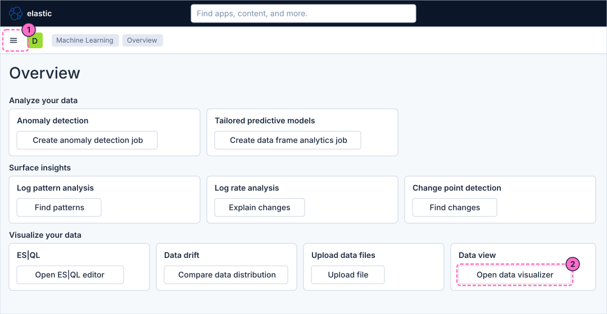
-
Choose the data view Bookshelf logs (guides). If the page first asks for a data view, pick it there.
-
Find the row of the field
severity_textand read its values, INFO and ERROR. This is the field the log rate analysis explains later.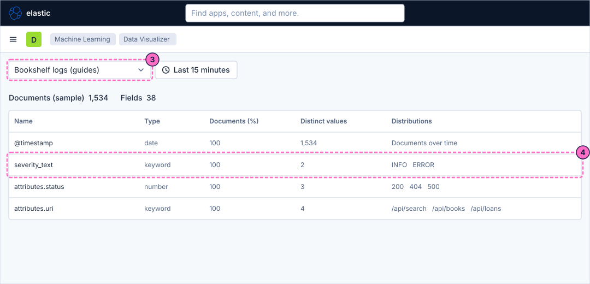
Create a single metric job
-
Go back to the Overview and, in the card Anomaly detection, click Create anomaly detection job.
-
Choose the data view Bookshelf logs (guides).
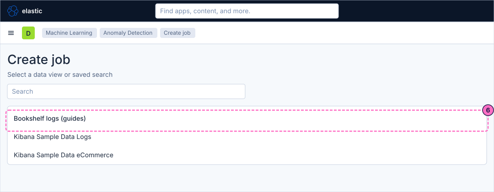
-
Choose the job type Single metric, which analyses one time series.
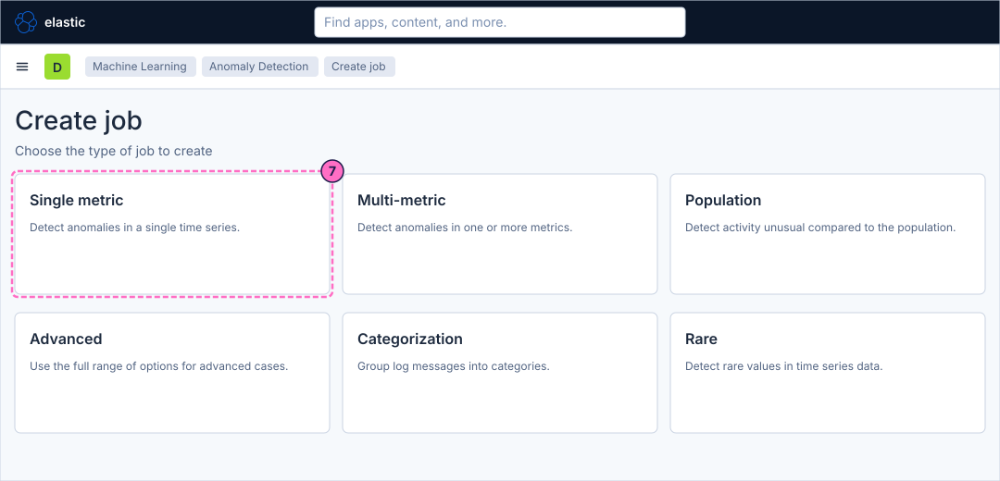
-
In the first wizard step, Time range, click Use full data.
-
Click Next.
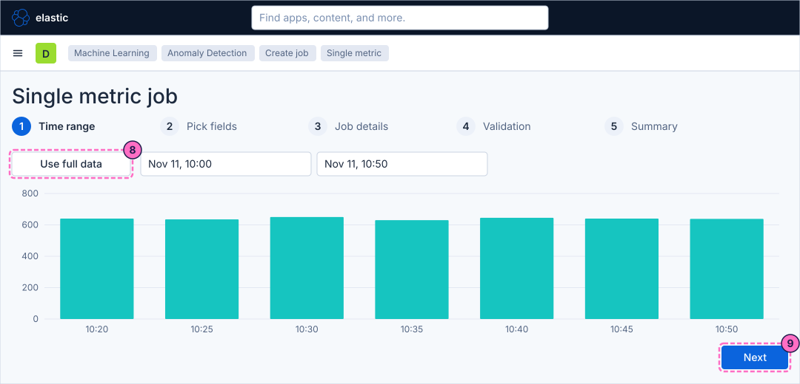
-
In Pick fields, choose the aggregation Count, so that the job models the number of log lines in each bucket.
-
Set the Bucket span to
1m. -
Click Next.
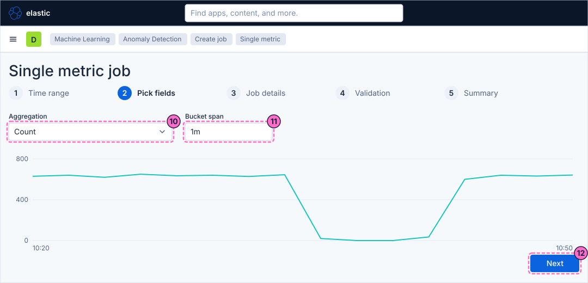
-
In Job details, type the Job ID
guide-bookshelf-log-rate. -
Click Next to go through the Validation step and read its messages.
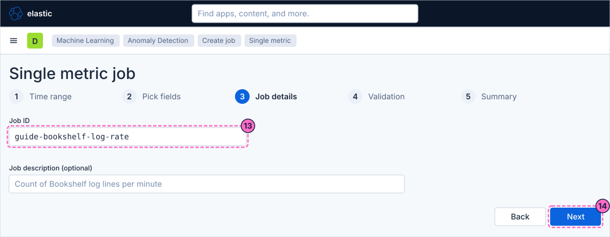
-
In Summary, click Create job. If the wizard offers to keep the job running in real time, choose that, so that the job also analyses the traffic you send in the check section.
Read the results and run a forecast
-
Open the job in the Single Metric Viewer, from the list of jobs under Machine Learning → Anomaly Detection → Jobs or from the wizard when it offers the results.
-
Read the chart: the line is the actual count per bucket, the shaded band is what the model expects, and a coloured marker flags a bucket as an anomaly. The table Anomalies below it lists time, severity, actual and typical values.
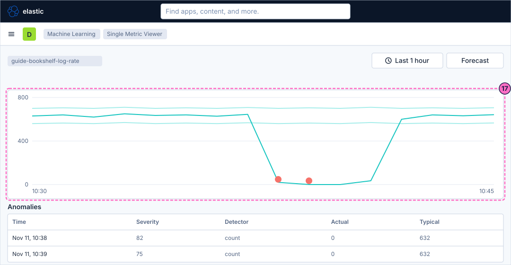
-
Click Forecast.
-
In the dialog that opens, set the duration to
1d. -
Click Run. The forecast is drawn after the actual line, with its own expected band.
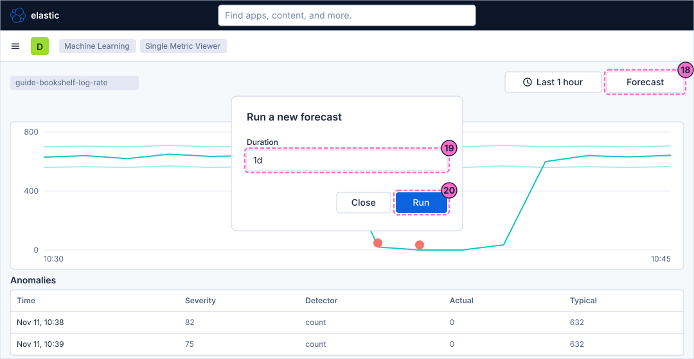
-
Open the same job in the Anomaly Explorer.
-
In the anomaly timeline, click a coloured cell of the Overall lane. Cells are coloured by the severity of the anomalies of that period.
-
Read the table Anomalies below the timeline, which now lists the anomalies of the selected period.
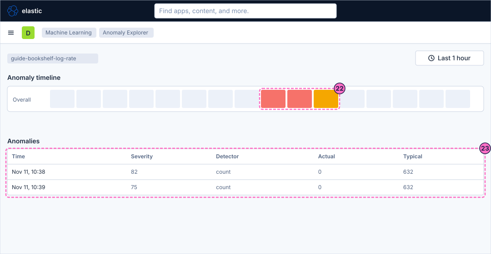
Explain a spike with log rate analysis
Log rate analysis explains a change after it happened. It needs the failing period in the data, and it works best when the traffic has returned to normal, so that the chart shows a baseline and a deviation.
-
In a terminal, start the failing mode and wait about three minutes:
curl -X POST localhost:8090/mode/failing -
Restore normal traffic:
curl -X POST localhost:8090/mode/normal -
Open the Overview and, in the card Log rate analysis, click Explain changes.
-
Choose the data view Bookshelf logs (guides) in the picker and set the time picker to Last 30 minutes, so that the chart shows the failing period.
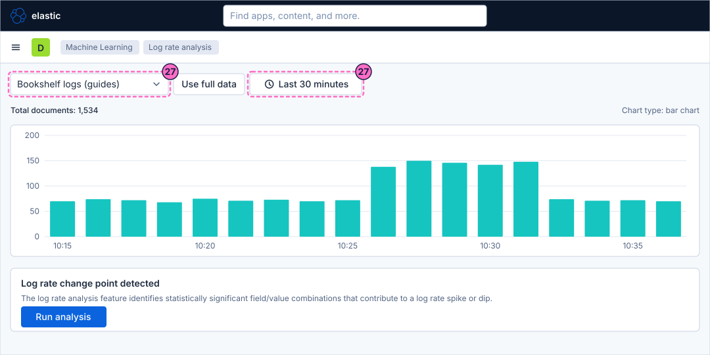
-
Select the deviation in the chart, the bars of the failing period. Do not rely on the window that Kibana selects automatically: in the lab it was taken after the failing period and found nothing. When the selection works, the chart shows the areas Baseline and Deviation.
-
Click Run analysis.
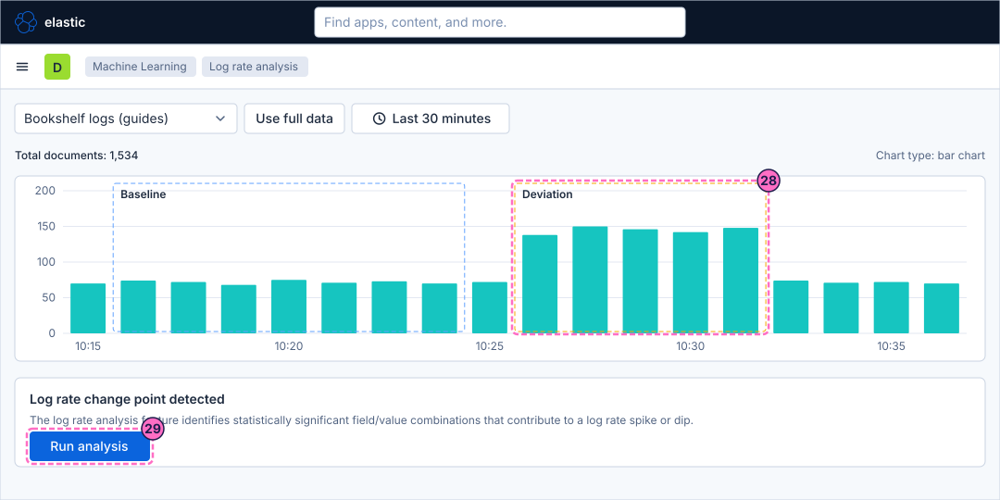
-
When the status says Analysis complete, read the table of the tab Fields, as in the figure under What you build. It lists the field values that explain the extra log lines; the candidate fields are
severity_text,attributes.uri,attributes.statusandbody.text. Turn on Smart grouping to merge values that always appear together, and use Reset to start again.
Find a change point
-
Go back to the Overview and, in the card Change point detection, click Find changes.
-
Choose the data view Bookshelf logs (guides).
-
Choose the function
avg. -
Choose the metric field
attributes.status. The average status code moves when the failing mode returns 500 answers, and the result lists the moment of the change.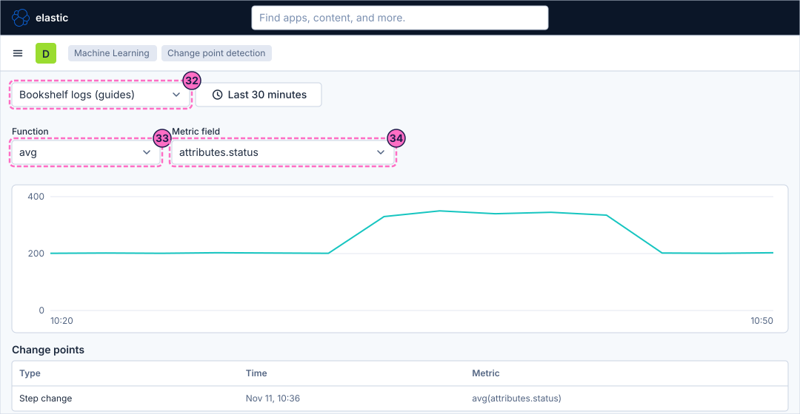
Check the result
-
Log rate analysis: the table of the tab Fields must list
severity_textwith the valueERRORand, if the failing mode answered with 500,attributes.statuswith the value500. The drawing under What you build shows the layout, not your values. -
Change point detection: the chart for
avgofattributes.statusmust show a change in the failing period. -
Anomaly detection: pause the traffic and bring it back, so that the job sees an unusual number of log lines, then reopen the Single Metric Viewer after a few minutes:
curl -X POST localhost:8090/mode/stopWait about four minutes, then restore the traffic:
curl -X POST localhost:8090/mode/normalThe paused buckets are far below the learned count and should be flagged. If the Anomaly Explorer shows no coloured cell, the model has too little history: let the lab and the job run for an hour and repeat the pause. This check was not run end to end in the lab.
Variations
-
Run the job as a multi-metric or a population job, or split the count by
attributes.uri, to model each URI separately. -
Create an anomaly detection alert rule for the job from Stack Management → Rules; the reference page on machine learning describes the rule and its connector.
-
Run log pattern analysis from the Overview with Find patterns on the field
body.textto group the log messages.
What can go wrong
| Symptom | Cause | Fix |
|---|---|---|
Log rate analysis says that the analysis did not return any results |
The automatically selected deviation does not cover the failing period. |
Select the deviation yourself in the chart, over the bars of the failing period, and run the analysis again. |
The chart of log rate analysis shows no spike |
The time picker does not cover the failing period, or the failing mode ran for less than a minute. |
Set Last 30 minutes or Last 1 hour, run the failing mode for about three minutes and restore it with |
The job does not open |
The node has too little memory for the default model memory limit. |
Lower the model memory limit in the job settings and reopen the job. |
The Anomaly Explorer shows no anomalies |
The model has seen too little data to know what is normal. |
Let the job run longer, then pause the traffic again as in the check section. |
The machine learning pages ask for a licence |
The licence is not Platinum or trial. |
Check the licence with |
Clean up
Keep the job if you want to look at it again. To remove it, open it in Machine Learning → Anomaly Detection → Jobs, stop its datafeed, close it and delete it. Forecasts are deleted with the job.
Stopping the profile with docker compose --profile kibana down -v deletes everything the lab stores.
Where to go next
-
Previous guide: Manage alerts, maintenance windows and cases.
-
Next guide: Tour of the Observability apps, which walks through the APM pages the lab does feed.
-
Reference: Machine Learning and AIOps covers jobs, results, alert rules and the AIOps tools in full.